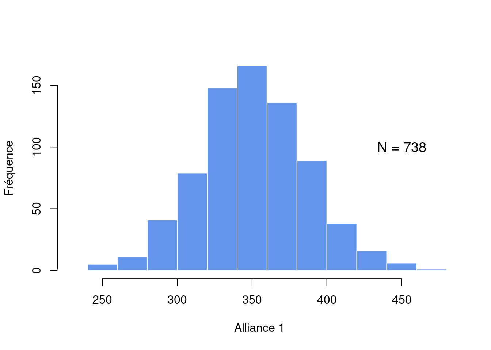
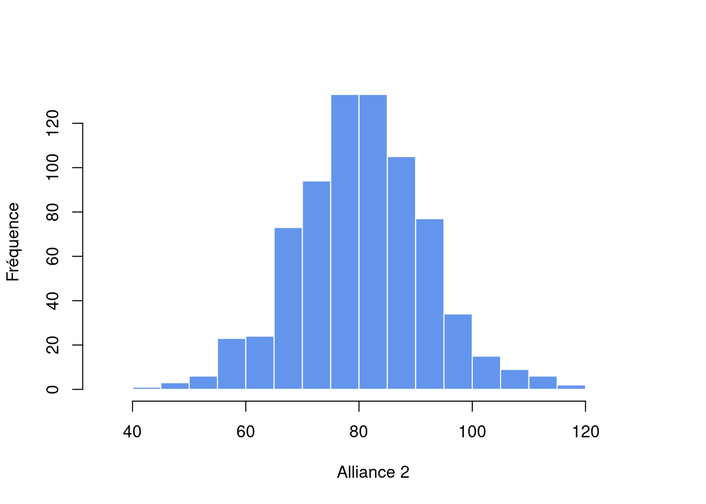
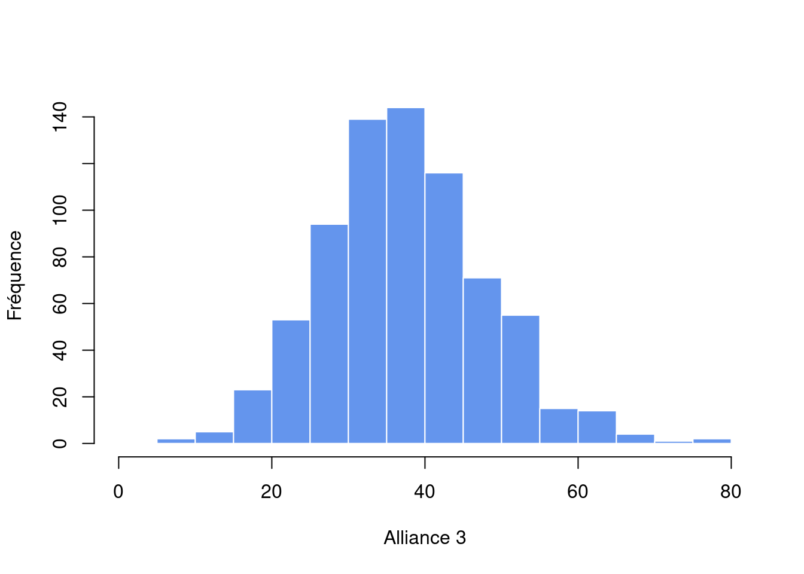
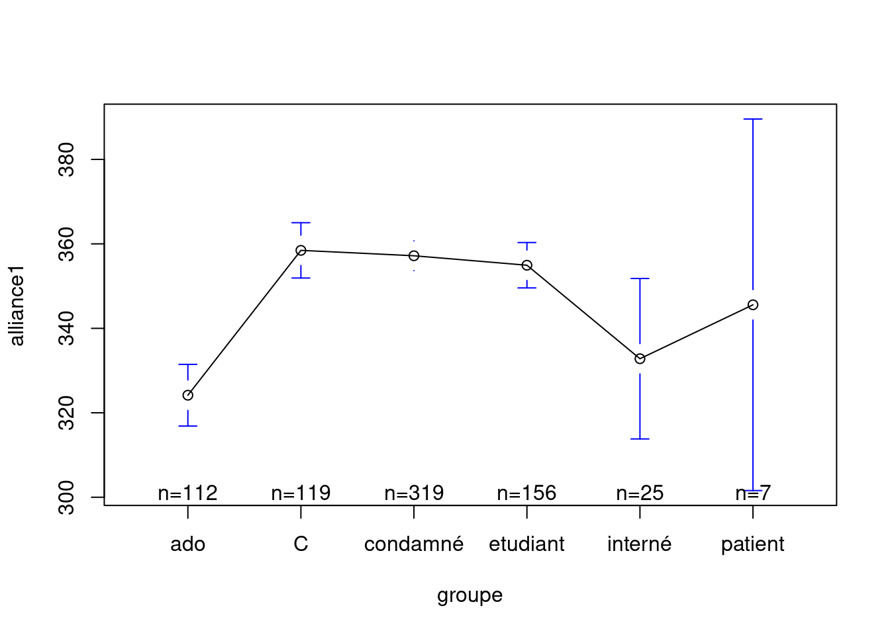
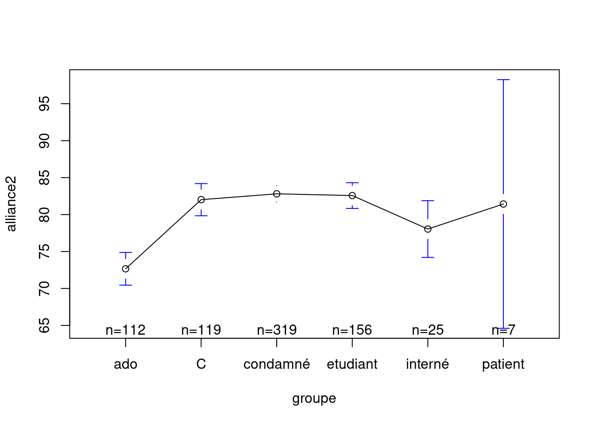
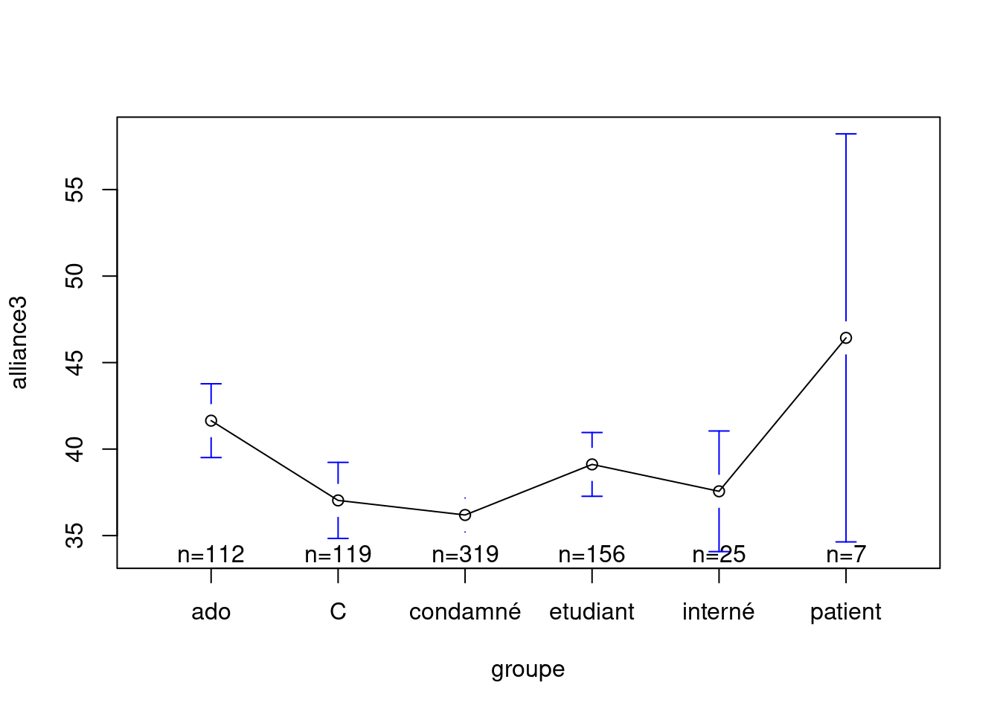
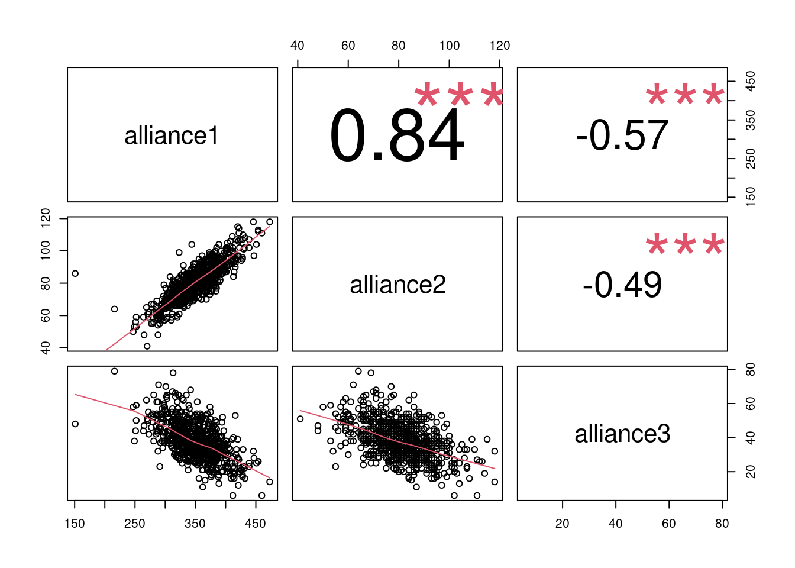
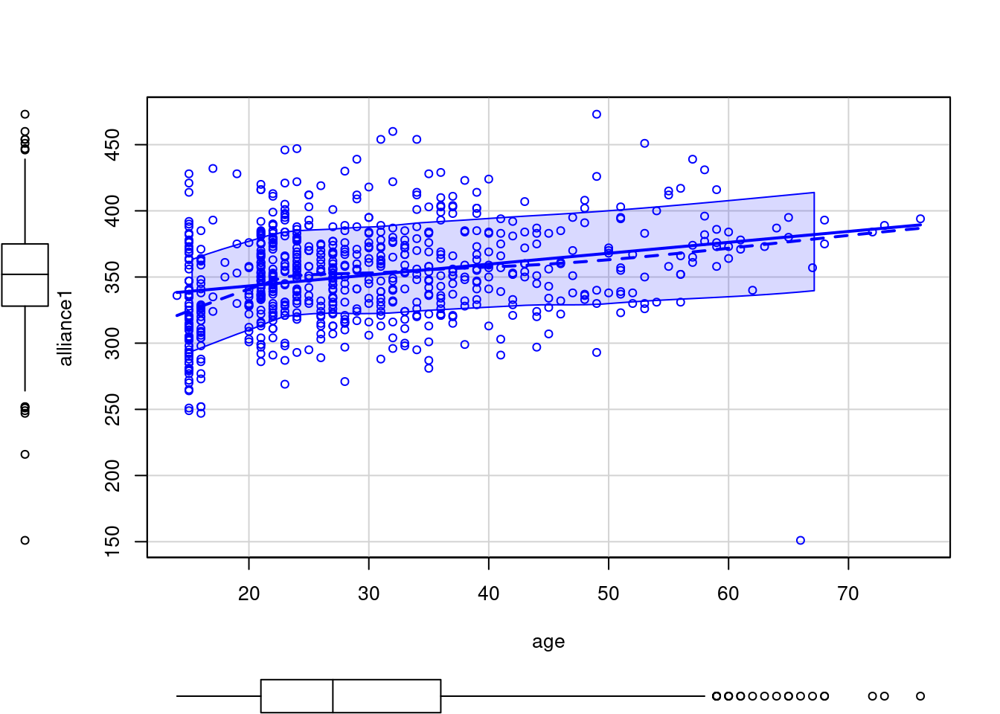
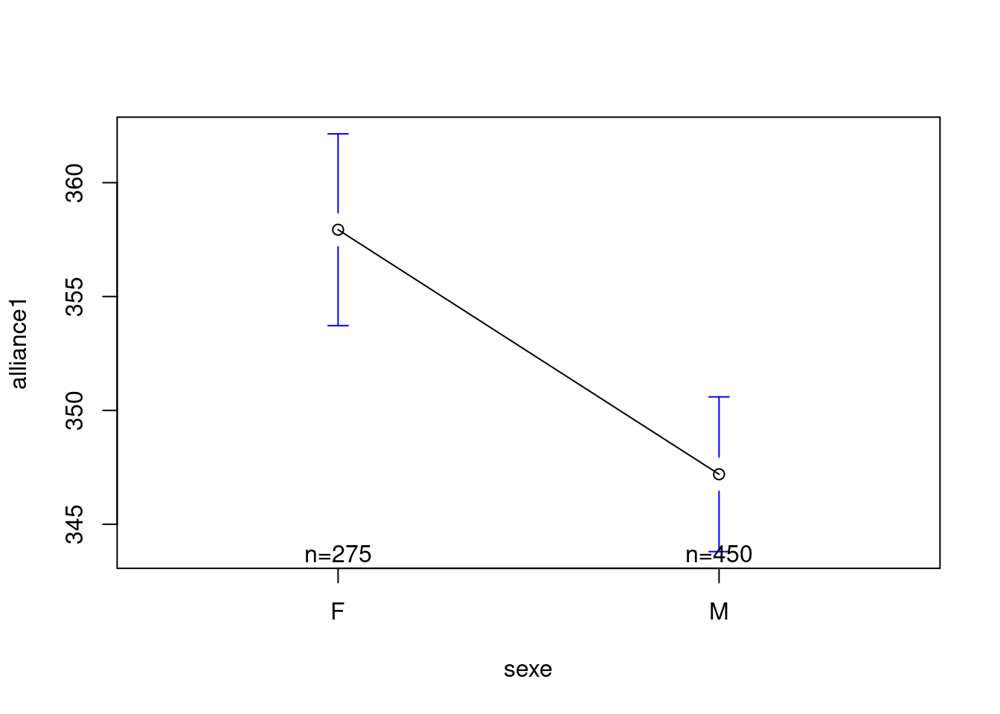

Introduction
A l’occasion d’une étude précédente (Thiry, 2020) (disponible ici), nous avons demandé à 38 cliniciens du domaine de la santé mentale d’identifier les traits de personnalité de leurs patients susceptibles de faciliter ou de freiner l’alliance thérapeutique. Sur base de leurs réponses, nous avons identifié trois indices qui se basent sur les variables du modèle de personnalité en cinq facteurs tels que le NEO PI (McCrae & Costa, 2016) ou l’IPIP NEO (Goldberg et al., 2006) :
- alliance1 (facilite) = O + A + C
- alliance2 (facilite) = A2 + O3 + C5 + O5
- alliance3 (freine) = (32-A5) + (32-A2) + (32-A1)
Nous n’avions toutefois fourni aucune donnée psychométrique relative à ces trois indices expérimentaux. Dans cet article, nous proposons des normes permettant de situer un protocole donné de NEO PI R (ou 3) par rapport à un échantillon normatif. En outre, nous souhaitons nous intéresser aux effets éventuels de l’âge et du sexe des patients sur ces indices. Nous nous interrogerons également sur la pertinence de ces trois indices : faut-il les garder tous les trois afin d’évaluer la qualité de l’alliance thérapeutique ? Le but est de mieux opérationnaliser ces indices afin de préparer toutes études sur leur validité externe.
Méthode
Participants
Nous disposons d’un échantillon vaste mais hétéroclite. Il se compose de 738 personnes dont 450 (62.07%) hommes et 275 (37.93%) femmes qui ont répondu à la version française du NEO PI R ou 3. L’âge moyen est égal à 29.57 ans avec un écart-type égal à 12.08. L’âge varie de 14 à 76 ans.
L’échantillon global se compose de six sous-échantillons :
- Des personnes tout-venant qui avaient répondu à une annonce dans le cadre d’une recherche précédente (Thiry, 2009) : n = 119 (16.12%) ;
- Des personnes condamnées et emprisonnées : n = 319 (43.22%) ;
- Des personnées emprisonnées mais reconnues irresponsables pour cause de trouble mental : n = 25 (3.39%) ;
- Des adolescents qui ont passé le NEO PI-R en milieu scolaire : n = 112 (15.18%) ;
- Des étudiants en Master de psychologie légale à l’Université de Mons : n = 156 (21.14%) ;
- Des patients en thérapie : n = 7 (0.95%).
Résultats
La Figure 1 représente la distribution de l’indice que nous avons appelé alliance1 (domaines qui facilitent l’alliance thérapeutique).
La Figure 2 représente la distribution de l’indice que nous avons appelé alliance2 (facettes qui facilitent l’alliance thérapeutique).

La Figure 3 représente la distribution de l’indice que nous avons appelé alliance3 (facettes qui feinent l’alliance thérapeutique).

Les trois distributions sont d’allure normale et semblent permettre de discriminer les participants les uns des autres.
| Variables | Moyenne | ET | Min | Max |
|---|---|---|---|---|
| Alliance 1 | 350.97 | 36.86 | 151.00 | 473.00 |
| Alliance 2 | 80.91 | 11.44 | 41.00 | 118.00 |
| Alliance 3 | 37.92 | 10.68 | 6.00 | 79.00 |
Le Table 1 présente les statistiques descriptives des trois variables d’alliance thérapeutique. Elles permettent notamment de calculer des scores t à l’instar des autres variables du NEO PI. Une question se pose : nos différents groupes présentent-ils des scores différents pour chacune de nos variables ?
Moyennes d’alliance 1 par groupe
La Figure 4 présente les moyennes et les intervalles de confiance pour chaque groupe pour la variable alliance1.

Ces moyennes sont-elles significativement différentes ? Pour répondre à cette question, nous effectuons une régression linéaire avec notre groupe contrôle comme modalité de référence.
Les résultats indiquent qu’au moins une moyenne serait différente de celle du groupe contrôle : \(R^2 = .11\), \(F(5, 732) = 18.15\), \(p < .001\). Lesquelles ?
| Predictor | \(b\) | 95% CI | \(t\) | \(\mathit{df}\) | \(p\) |
|---|---|---|---|---|---|
| Intercept | 358.46 | [352.18, 364.74] | 112.09 | 732 | < .001 |
| F groupeado | -34.30 | [-43.32, -25.28] | -7.47 | 732 | < .001 |
| F groupecondamné | -1.28 | [-8.63, 6.08] | -0.34 | 732 | .733 |
| F groupeetudiant | -3.52 | [-11.86, 4.82] | -0.83 | 732 | .407 |
| F groupeinterné | -25.66 | [-40.73, -10.59] | -3.34 | 732 | < .001 |
| F groupepatient | -12.89 | [-39.53, 13.75] | -0.95 | 732 | .342 |
Nous constatons dans le Table 2 que les moyennes pour les groupes adolescent et interné sont significativement plus basses que les autres. Par contre toutes les autres moyennes sont estimées identiques à celle du groupe contrôle.
Moyennes d’alliance 2 par groupe
La Figure 5 présente les moyennes et les intervalles de confiance pour chaque groupe pour la variable alliance2.

Ces moyennes sont-elles significativement différentes ? Pour répondre à cette question, nous effectuons à nouveau une régression linéaire avec notre groupe contrôle comme modalité de référence.
Les résultats indiquent que certaines moyennes sont différentes de celle du groupe contrôle : \(R^2 = .10\), \(F(5, 732) = 16.10\), \(p < .001\). Lesquelles ?
| Predictor | \(b\) | 95% CI | \(t\) | \(\mathit{df}\) | \(p\) |
|---|---|---|---|---|---|
| Intercept | 82.02 | [80.06, 83.98] | 82.15 | 732 | < .001 |
| F groupeado | -9.36 | [-12.17, -6.54] | -6.53 | 732 | < .001 |
| F groupecondamné | 0.79 | [-1.51, 3.09] | 0.67 | 732 | .500 |
| F groupeetudiant | 0.55 | [-2.05, 3.16] | 0.42 | 732 | .676 |
| F groupeinterné | -3.98 | [-8.68, 0.73] | -1.66 | 732 | .097 |
| F groupepatient | -0.59 | [-8.90, 7.73] | -0.14 | 732 | .890 |
Nous constatons dans le Table 3 que la moyenne pour le groupe adolescent est significativement plus basse que les autres. Par contre toutes les autres moyennes sont estimées identiques à celle du groupe contrôle au seuil p <.001.
Moyennes d’alliance 3 par groupe
La Figure 6 présente les moyennes et les intervalles de confiance pour chaque groupe pour la variable alliance3.

Ces moyennes sont-elles significativement différentes ? Pour répondre à cette question, nous effectuons une régression linéaire avec notre groupe contrôle comme modalité de référence.
Les résultats indiquent que certaines moyennes sont différentes de celle du groupe contrôle : \(R^2 = .04\), \(F(5, 732) = 6.05\), \(p < .001\). Lesquelles ?
| Predictor | \(b\) | 95% CI | \(t\) | \(\mathit{df}\) | \(p\) |
|---|---|---|---|---|---|
| Intercept | 37.03 | [35.14, 38.92] | 38.48 | 732 | < .001 |
| F groupeado | 4.61 | [1.90, 7.32] | 3.34 | 732 | < .001 |
| F groupecondamné | -0.84 | [-3.06, 1.37] | -0.75 | 732 | .455 |
| F groupeetudiant | 2.08 | [-0.43, 4.59] | 1.63 | 732 | .104 |
| F groupeinterné | 0.53 | [-4.01, 5.06] | 0.23 | 732 | .820 |
| F groupepatient | 9.39 | [1.38, 17.41] | 2.30 | 732 | .022 |
Nous constatons dans le Table 4 que la moyenne pour le groupe adolescent est significativement plus élevée que les autres. Par contre toutes les autres moyennes sont estimées identiques à celle du groupe contrôle.
Les variables d’alliance thérapeutique diffèrent-elles d’un groupe à l’autre
D’une manière générale, nous ne pouvons pas affirmer que nos groupes ont un effet sur les scores aux trois indices d’alliance thérapeutique, à part le groupe adolescent. Par conséquent, les normes proposées au Tableau @ref(tab:table1) peuvent dès lors s’appliquer à tous les participants. Notons toutefois que l’âge des participants est susceptible d’être lié à ces scores. Nous devrons dès lors nous intéresser à cette variable afin d’en apprendre davantage.
Liens entre les trois indices
A priori, les deux premiers indices évaluent une même tendance avec des variables différentes (domaines versus facettes du modèle de personnalité en cinq facteurs). Le troisième indice est censé évaluer une tendance inverse. Qu’en est-il des corrélations entre ces trois indices ? La Figure 7 représente les corrélations entre les trois indices.

Nous constatons effectivement que les indices alliance1 et alliance2 sont fortement corrélés positivement, et négativement avec alliance3. Ces résultats nous invitent à remettre en question la pertinence d’utiliser trois indices pour évaluer une même tendance. Il semble que l’indice alliance1 apporte une information substantielle pour l’évaluer. Notons qu’elle repose sur les scores de trois domaines (A, O et C) et non sur des facettes sous-jacentes (ce qui est un résultat non attendu a priori). Dans un souci d’économie, il est dès lors envisageable d’utiliser un seul indice : alliance1 (A+O+C).
Effet de l’âge et du sexe sur la variable d’alliance thérapeutique
L’âge et le sexe des patients ont-ils une influence sur la variable alliance1 ?

La Figure 8 semble indiquer une tendance des deux variables à augmenter l’une avec l’autre. Notons l’infléchissement de la courbe loess pour les âges inférieurs à vingt ans (ce qui correspond à notre groupe d’adolescents). Il semble que les scores d’alliance1 soient particulièrement bas avant cet âge.
Qu’en est-il pour le sexe ?

La Figure 9 semble indiquer que les femmes obtiennent des scores supérieurs que les hommes à la variable alliance1.
Afin de tester ces observations, nous effectuons une régression linéaire en incluant les variables age et sexe comme variables prédictrices.
| Predictor | \(b\) | 95% CI | \(t\) | \(\mathit{df}\) | \(p\) |
|---|---|---|---|---|---|
| Intercept | 333.33 | [326.16, 340.49] | 91.30 | 704 | < .001 |
| Age | 0.91 | [0.70, 1.13] | 8.34 | 704 | < .001 |
| SexeM | -14.75 | [-20.08, -9.42] | -5.43 | 704 | < .001 |
Les deux variables semblent avoir un effet significatif sur la variable alliance1 : \(R^2 = .11\), \(F(2, 704) = 43.69\), \(p < .001\)
Discussion
Que nous apprennent ces résultats ? D’abord que les trois variables permettent de discriminer les sujets de manière assez large et précise. Ensuite que les personnes incarcérées, les patients et les étudiants obtiennent des scores globalement identiques pour les trois indices. Les personnes dont l’âge est inférieur à vingt ans présentent quant à elles des scores à alliance1 significativement inférieurs aux autres. Les hommes présentent également des scores à alliance1 significativement plus bas que les femmes. L’usage des trois indices est susceptible d’approcher le phénomène d’alliance thérapeutique de manière nuancée en termes dynamiques : ce qui facilite versus ce qui freine l’alliance thérapeutique. Toutefois, les trois indices partagent des liens étroits les uns avec les autres. Ils semblent dès lors apporter une informations fortement redondante (et donc inutile). Dans un souci de simplicité et d’économie, il semble que la variable alliance1 (O+A+C) puisse suffir pour évaluer le phénomène qui nous intéresse. Contrairement à nos attentes initiales, les variables estimées pertinentes pour prédire une bonne alliance thérapeutiques par les cliniciens ne reposent pas sur des facettes précises de la personnalité mais plutôt sur des configurations plus globales. Ce profil O+ A+ C+ appelle dès lors à commentaires. D’abord, il ne s’avère pas uniquement pertinent en regard d’une prise en charge psychothérapeutique. Il renvoie à un rapport particulier que les individus entretiennent avec le monde extérieur, les autres personnes et les stratégies d’actions. Les styles graph du manuel du NEO PI 3 (McCrae & Costa, 2016) permettent de dégager trois styles relatifs à cette configuration :
| O+ A+ : progressistes | O+ C+ : bons élèves | A+ C+ : altruistes efficaces |
|---|---|---|
| Ces personnes ont fréquemment une approche réfléchie des problèmes sociaux, pour lesquels elles souhaitent généralement trouver des solutions nouvelles. Elles ont tendance à avoir foi dans la nature humaine et à être persuadées que la société peut être améliorée par l’éducation, l’innovation et la coopération. | Ces personnes possèdent généralement une soif d’apprendre mêlée à une application et une organisation qui peuvent les pousser vers l’excellence. Elles nourissent assez fréquemment des ambitions élevées et se montrent souvent créatives dans leur approche de résolution des problèmes. Elles vont généralement aussi loin dans leurs études que leur talent le leur permet. | En général, ces personnes travaillent avec application pour le bien commun. Leur tendance à l’autodiscipline et à la persévérance leur permet le plus souvent de canaliser leurs efforts et les mettre au service d’autrui. En tant que bénévoles, elles peuvent se charger de tâches difficiles ou ingrates, et s’y atteler jusqu’à les terminer. |
Selon les cliniciens, la combinaison de ces trois styles de personnalité chez le patient serait indicatrice d’une bonne alliance thérapeutique. Notons que ce profil global semble reposer sur des bases ambitieuses et rigoureuses : curiosité intellectuelle, inventivité, persévérance, altruisme, philanthropie, rigueur scolaire et professionnelle ou encore engagement social. A y réfléchir, ce profil de patient idéal peut étonner. D’autant plus que la notion de souffrance (ou névrosisme) y est tout à fait absente. Ce profil ressemble par contre beaucoup au prototype social du psychothérapeute, engagé dans l’aide à l’autre avec rigueur, détermination, ouvert à la réflexion et aux échanges intellectuels. La conception du patient idéal des cliniciens serait-elle une projection (inconsciente) de leurs propres idéaux professionnels ? Ces idéaux sont bien sûr importants car ils fondent la pratique des thérapeutes et balisent leur travail quotidien. Ils ont toutefois un corollaire potentiel : proposer un idéal sous-jacent au patient qui ne s’y retrouve pas nécessairement. Bien entendu, la plupart des cliniciens sont ouverts et tolérants, ce qui leur permet d’être sensibles aux idéaux de leurs patients. Nos résultats nous amènent toutefois à penser qu’il existe chez eux une préconception des idéaux thérapeutiques. Cela ne constitue pas un problème en soi car les prises en charge thérapeutique reposent souvent (toujours ?) sur des bases philosophiques sous-jacentes. Selon nous, il s’agit toutefois de les connaître et d’être au clair avec elles. Parmi ces bases philosophiques, il en est une qui porte plusieurs noms mais qui repose sur l’idée que le processus thérapeutique vise à augmenter l’autonomie et le sentiment de prendre des décisions en accord avec ses propres valeurs. Ainsi est-il question de subjectivation :
La subjectivation nous apparaît dès lors comme ce processus, en partie inconscient, par lequel un individu se reconnaît dans sa manière de donner sens au réel, au moyen d’une activité de symbolisation. (Wainrib, 2006)
Il s’agit d’une position philosophique ambitieuse qui nécessite du temps et un exercice mental qui est censé s’acquérir lors des séances cliniques. Son objectif premier n’est pas la diminution de la souffrance du patient mais plutôt à augmenter le pouvoir de décision du patient. Celui-ci est dès lors susceptible de modifier son rapport au monde ou à ladite souffrance. Il semble que la configuration O+ A+ C+ fasse implicitement référence à ce processus philosophique qui peut prendre cours lors des entretiens cliniques.
Les références
Goldberg, L. R., Johnson, J. A., Eber, H. W., Hogan, R., Ashton, M. C., Cloninger, C. R., & Gough, H. G. (2006). The international personality item pool and the future of public-domain personality measures. Journal of Research in personality, 40(1), 84‑96.
McCrae, R. R., & Costa, P. T. (2016). Inventaires de la personnalité NEO: l’inventaire de la personnalité NEO-3 (NEO-PI-3) : manuel technique. Institut de recherches psychologiques.
Thiry, B. (2009). Ecriture manuscrite et personnalité: évaluation de la fiabilité et de la validité de la graphologie (Thèse de doctorat, UCL). Consulté à l'adresse https://dial.uclouvain.be/pr/boreal/fr/object/boreal%3A21908
Thiry, B. (2020). Assessing the therapeutic alliance with the five-factor model: An expert-based approach. 178(9), 913‑919.
Wainrib, S. (2006). La psychanalyse, une question de subjectivation? Le carnet PSY, (5), 23‑25. Consulté à l'adresse https://www.cairn.info/revue-le-carnet-psy-2006-5-page-23.htm
Citation
BibTeX
@online{thiry2022,
author = {Thiry, Benjamin},
title = {Qualités psychométriques des indices d’alliance thérapeutique
du NEO PI},
date = {2022-09-22},
url = {https://benjaminthiry.netlify.app/posts/2022-07-31-qualits-psychomtriques-des-indices-dalliance-thrapeutique/},
langid = {fr}
}
Veuillez citer ce travail comme suit :
Thiry, B. (2022, September 22). Qualités psychométriques des indices
d’alliance thérapeutique du NEO PI. Retrieved from https://benjaminthiry.netlify.app/posts/2022-07-31-qualits-psychomtriques-des-indices-dalliance-thrapeutique/